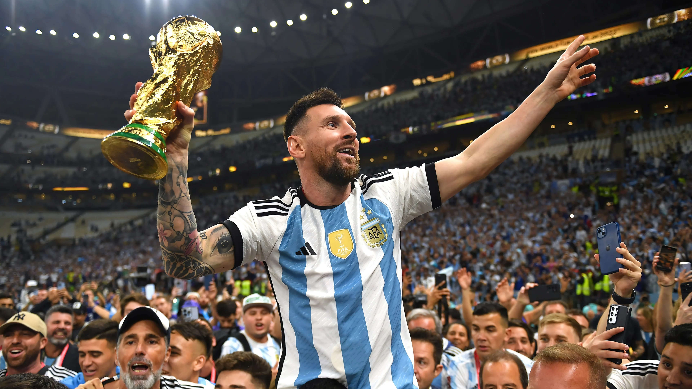
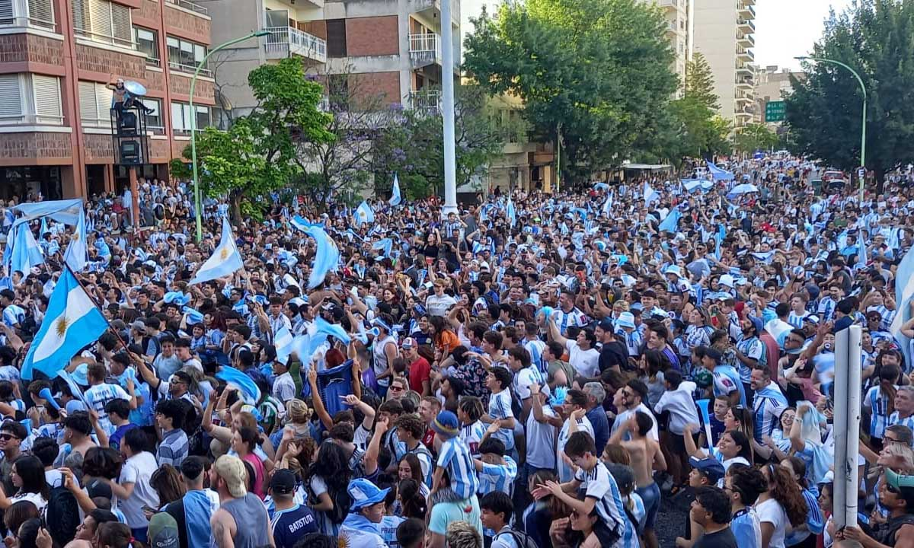

¡Argentina Campeón del Mundo 2022!
Argentina ha tenido un camino largo y difícil para llegar a la cima del fútbol mundial en el año 2022. Desde la decepción de la Copa del Mundo de 2018, el equipo ha trabajado incansablemente para mejorar su juego y fortalecer su unidad como equipo.
Con Lionel Messi liderando el camino en el campo y fuera de él, Argentina demostró una determinación inquebrantable para superar a equipos como polonia, croacia y holanda, en su camino hacia la final del Mundial. Final que terminamos ganando a francia por penales, despues de unas de una de las finales mas infartantes. Con cada victoria, el país entero se unió detrás del equipo, creando una energía y un apoyo sin precedentes.

El legado de Messi: el mejor jugador de la historia
Lionel Messi ha sido el líder indiscutible de la selección argentina durante más de una década, y su papel en la victoria del Mundial de 2022 no puede ser subestimado. Además de su habilidad excepcional en el campo, Messi ha sido un modelo a seguir para sus compañeros de equipo, inspirándolos con su dedicación y su ética de trabajo.
Pero el legado de Messi va más allá de su papel como jugador. Su influencia en el fútbol argentino y en la cultura del país es profunda y duradera, y su impacto en la juventud argentina es incalculable. La victoria del Mundial de 2022 es solo uno de los muchos logros de Messi, y su lugar en la historia del fútbol mundial está asegurado.

Un país unido
Un país unido
La victoria de Argentina en el Mundial de 2022 fue más que una simple hazaña deportiva; fue un momento de unión y orgullo nacional. Durante todo el torneo, los argentinos se unieron detrás de su equipo, llenando las calles con banderas y cánticos y compartiendo su pasión por el fútbol.
La victoria del Mundial fue un momento de celebración masiva en todo el país, con millones de personas saliendo a las calles para festejar juntos. La unidad y el espíritu de comunidad que se sintieron en todo el país durante este tiempo son verdaderamente inolvidables.


Una victoria para recordar
La victoria de Argentina en el Mundial de 2022 será recordada como uno de los momentos más importantes en la historia del fútbol argentino. Fue un momento de triunfo y alegría para todo el país, y un testimonio del poder del deporte para unir a la gente y crear una sensación de comunidad y orgullo nacional.
Pero más allá de eso, la victoria fue un recordatorio de que el trabajo duro, la dedicación y la perseverancia pueden llevar a grandes logros. El equipo argentino nunca perdió la fe en sí mismo ni en su capacidad para ganar, y esa actitud positiva y enfocada fue lo que finalmente los llevó a la cima del mundo del fútbol.